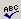

Click on the Spellcheck button to open the pop-up window that helps you
streamline the spellchecking process.
The KTML3 Spellchecker user interface will allow you to quickly identify misspelled words, to choose one of the suggested corrections or replace them with new expressions, and to add words to the dictionary. You can also ignore one or all the occurences of a word and to change one or all the occurences, at once.